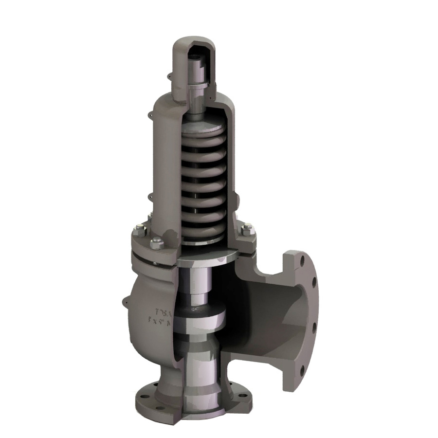
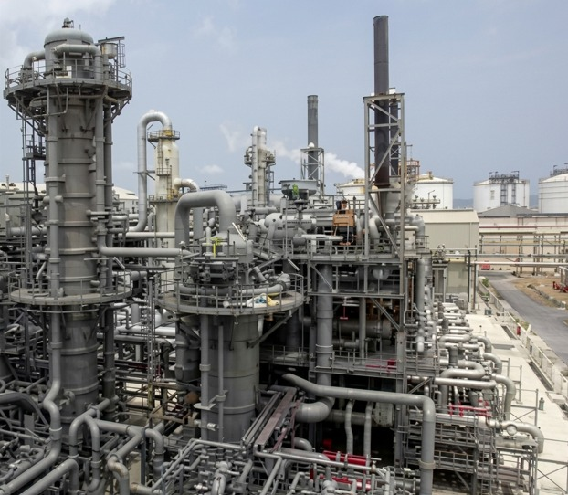
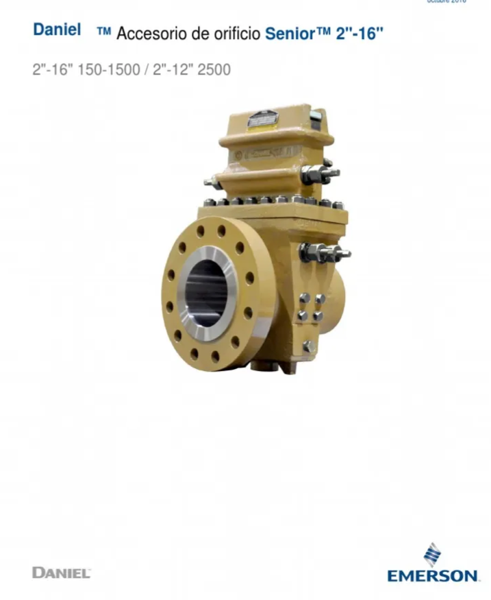
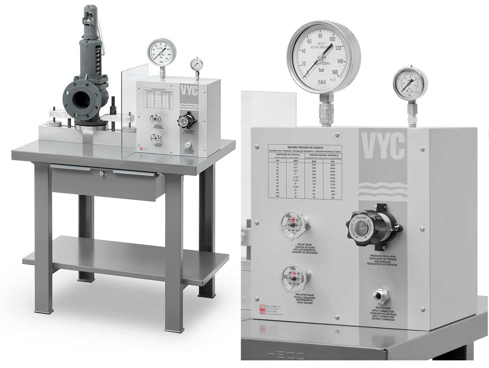
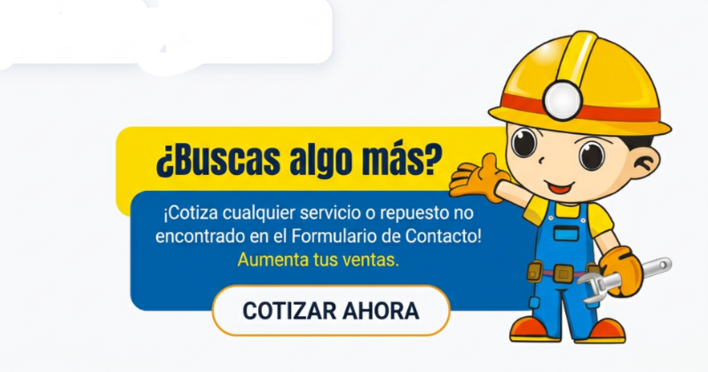
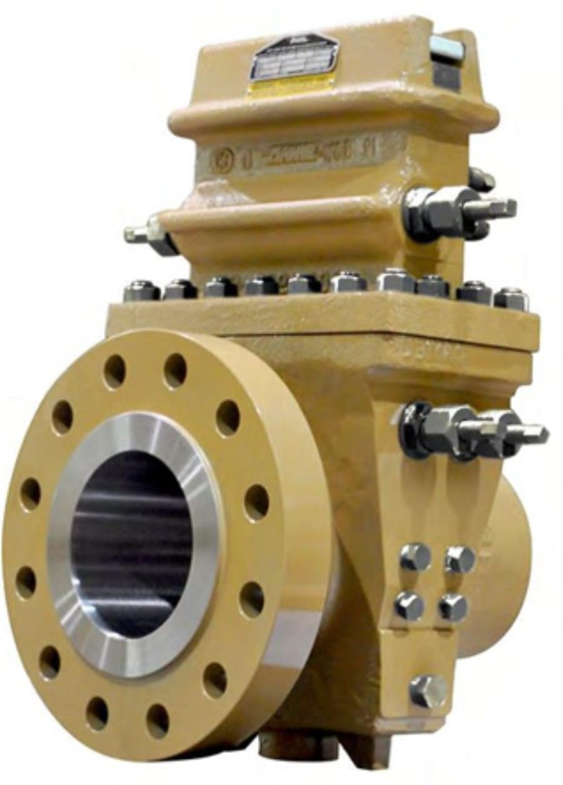
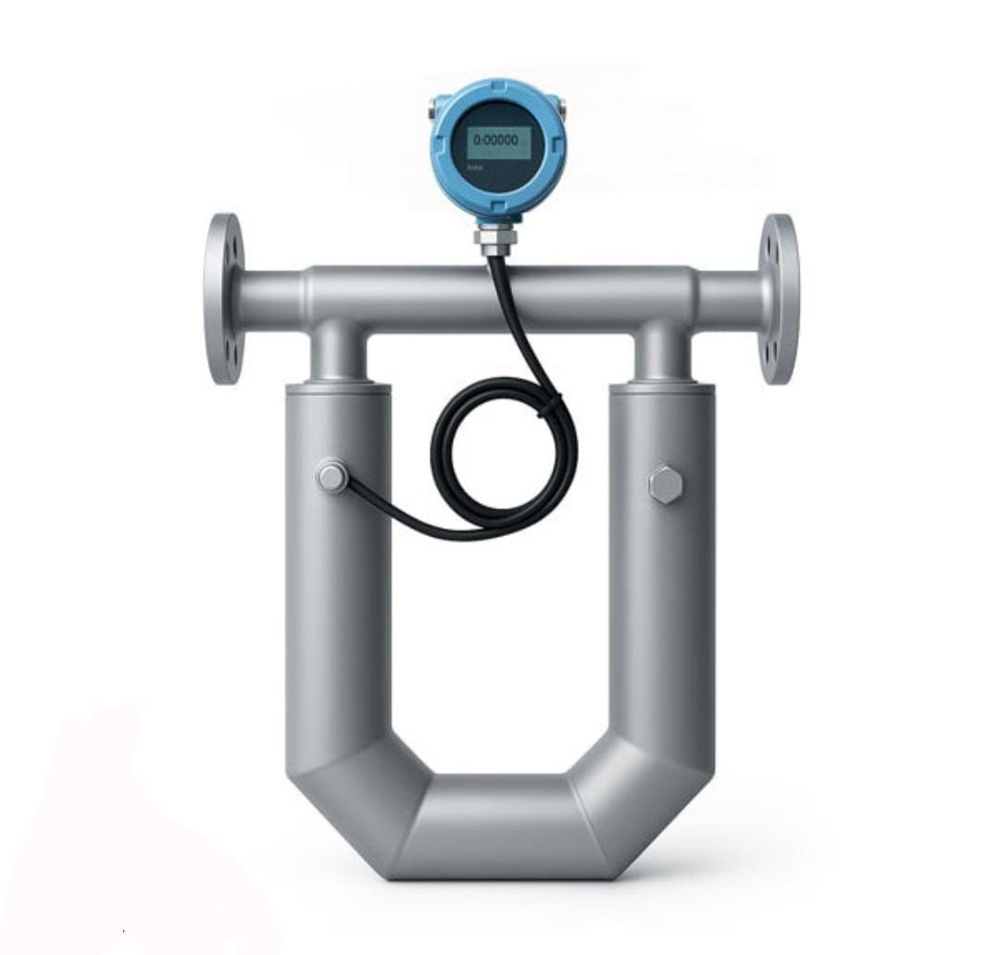
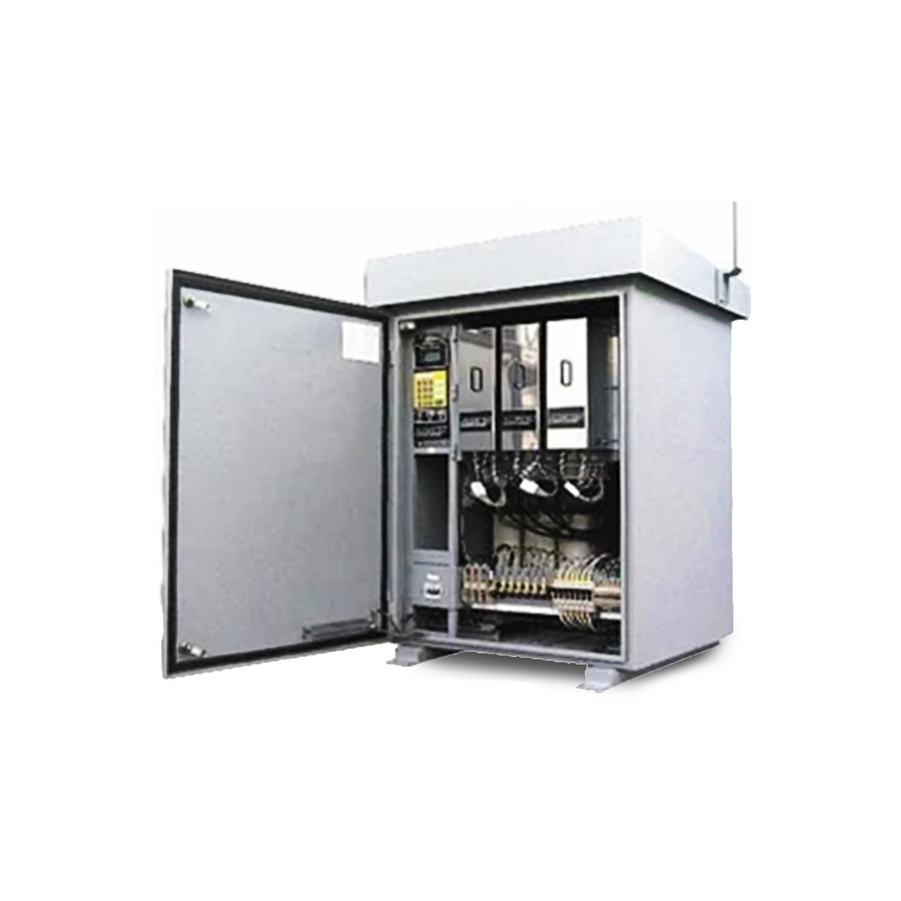
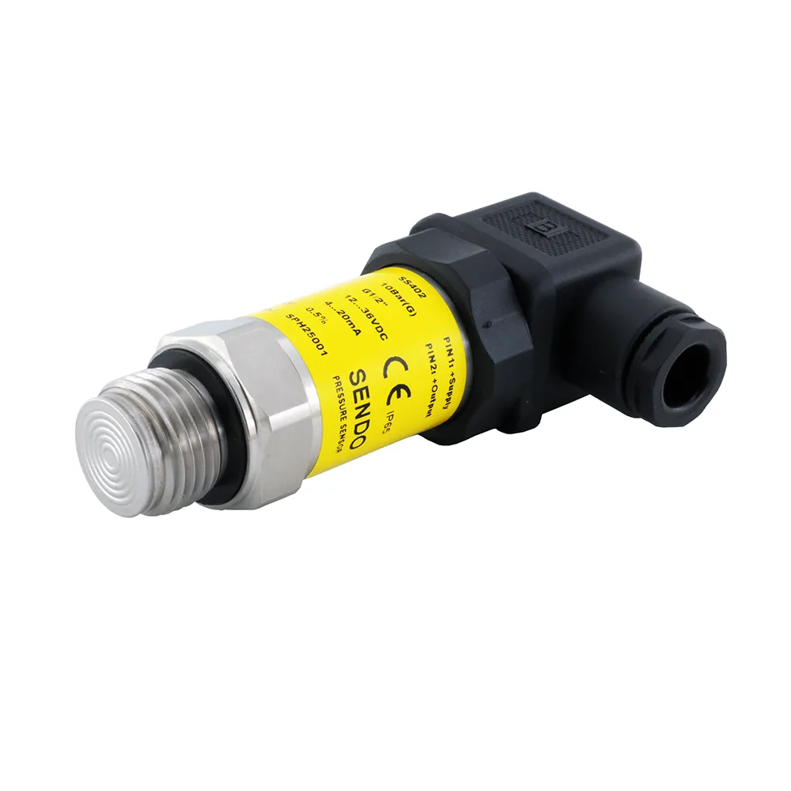
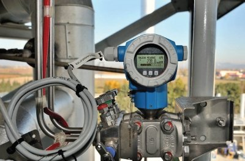

VÁLVULAS DE SEGURIDAD

Instrumentación Industrial
Soluciones avanzadas en calibración, mantenimiento y control automatizado para el sector petrolero y gasífero en Venezuela.
PAASMALIN, C.A. es una empresa venezolana de ingeniería y servicios industriales especializada en instrumentación, electricidad, electrónica y control automatizado, ubicada en Anaco, Estado Anzoátegui.
PAASMALIN, C.A. es una empresa venezolana con 16 años de trayectoria, constituida en el año 2010. Nos especializamos en la ejecución de obras de gran envergadura, proyectos de ingeniería y servicios especializados, así como en la distribución masiva de bienes, equipos y suministros esenciales para el desarrollo industrial, tecnológico y comercial de la nación. Ofrecemos servicios de mantenimiento, automatización, y asesorías en sectores energéticos. Su experiencia está representada por Mantenimientos Mayores a Equipos Rotativos, Facilidades de Producción en Superficie, Fabricación e Implantación de nuevos diseños y optimizaciones. Desarrollo de Ingeniería para Estaciones, Plantas de Producción, Procesamiento y Tratamiento en Gas & Crudo, Plantas de Generación Eléctrica.
Persona Contacto
Alex E, Mavares L

Trayectoria comprobada
Capacidades comprobadas en el área Industrial Gasífera y Petrolera con certificaciones ocupacionales vigentes.
Experiencia en Contratos de menores y mayores magnitudes, que requieran organización e infraestructura instalada.
Sede Principal: Anaco Anzoátegui - Sucursales: Lechería Anzoátegui - Maturín Monagas - Caracas - Punto Fijo Falcón - Morón Carabobo -
Disponibilidad para ejecutar trabajos con altos niveles de riesgo en múltiples disciplinas.
Capacidad operativa en escala geográfica a nivel nacional.
Personal directivo con trayectoria reconocida en la gestión de contratos nivel industrial.
Progresivo y consecuente con los adelantos tecnológicos del sector energético.
Familiarizado con el desarrollo de labores técnicas en entornos de presión operativa exigente.
Fabricantes y Representantes Exclusivos en diferentes Marcas y Areas Multidisciplinarias
Transmisores y Posicionadores, Paneles de Control, Pruebas Hidrostáticas, Mecanizado de Piezas, Reparación In Situ.







Servicios Especializados
Fabricación de Spool con Equipos Asociados y Soldadura Industrial de alta precisión.
Fabricación de Estructuras Metálicas en Vigas de cualquier variedad y dimensión.
Estructuras Mixtas en Concreto, Vigas, Metal Corrugado y Cercas Blindadas para estaciones y locaciones.
Servicio completo a Motocompresores de Gas: Caterpillar, Waukesha, Clark, Ingersoll Rand, Dresser-Rand, Cooper y más.
Mantenimiento Preventivo a Sistemas de Enfriamiento (Coolers) en plantas industriales.
Adecuación de redes contra incendios con Agua y Espuma según normativas vigentes.
Fabricación de Torres para Iluminación de Estadios, Plantas Industriales, Fincas y Aeropuertos.
Suministro de Grúas Telescópicas con Brazo Hidráulico de 8Tn y 12Tn, y servicio Vaccum.

Soluciones precisas para la medición de flujo de gas y líquidos con estándares internacionales.

Medición directa de masa y densidad de alta precisión para fluidos complejos y desafiantes.

Diseño, ensamblaje y puesta en marcha de sistemas de control industrial personalizados.
Mantenimiento, calibración y suministro de válvulas de seguridad y alivio de presión.

Instrumentación de campo de alta exactitud para el monitoreo continuo de variables críticas en tuberías y separadores.

Soluciones de medición de nivel sin contacto para tanques de almacenamiento de crudo y separadores de producción.

Automatización de válvulas industriales para garantizar una respuesta precisa del lazo de control.

Unidades remotas de telemetría y controladores lógicos para la automatización de pozos y estaciones de flujo.
Proyectos ejecutados con excelencia operativa para la industria petrolera y gasífera nacional.
Mantenimiento integral de instrumentación y válvulas de seguridad.
Calibración de transmisores y puesta en marcha de sistema de control.
Instalación de medidores Coriolis y cajas orificio Daniel.
Diseño e integración de paneles de control PLC y RTU.
Proceso estructurado para garantizar el éxito operativo.
Diagnóstico
Ingeniería
Ejecución
Supervisión
Entrega
Resolvemos las dudas más comunes sobre nuestros servicios industriales.
Nuestras calibraciones se realizan siguiendo los más altos estándares y normativas internacionales (como AGA, API, NFPA e ISA), utilizando equipos patrón certificados y trazables.
Sí, contamos con personal altamente calificado para realizar mantenimientos preventivos y correctivos, así como diagnósticos y calibraciones directamente en las instalaciones del cliente.
Nuestra sede principal está en Anaco, Estado Anzoátegui, pero ofrecemos cobertura y servicios especializados a nivel nacional para todo el sector petrolero y gasífero.
Absolutamente. Nos especializamos en la migración de sistemas obsoletos, integración de gabinetes y actualización de lógicas de control para PLC y RTU.
Contáctenos hoy para evaluar sus requerimientos técnicos. Nuestro equipo de ingenieros está listo para brindarle soluciones.
Anaco, Edo. Anzoátegui, Venezuela
+58 424 854 1279
paasmalinca@gmail.com